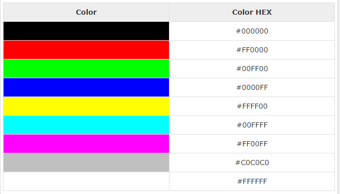
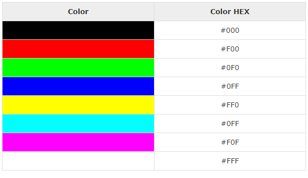
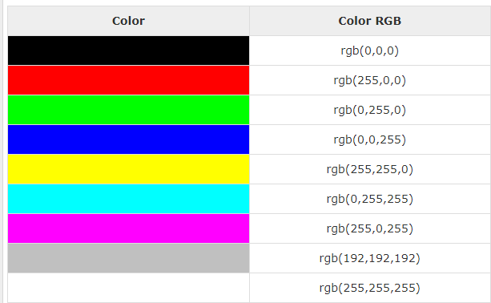

Css Colors
CSS uses color values to specify a color. Typically, these are used to set a color either for the foreground of an element (i.e., its text) or else for the background of the element. They can also be used to affect the color of borders and other decorative effects.
You can specify your color values in various formats. Following table lists all the possible formats
| format | syntax | example |
|---|---|---|
| Hex Code | #RRGGBB | p{color:#FF0000;} |
| Short Hex Code | #RGB | p{color:#6A7;} |
| RGB % | rgb(rrr%,ggg%,bbb%) | p{color:rgb(50%,50%,50%);} |
| RGB Absolute | rgb(rrr,ggg,bbb) | p{color:rgb(0,0,255);} |
| keyword | aqua, black, etc. | p{color:teal;} |
These formats are explained in more detail in the following sections
CSS Colors - Hex Codes
A hexadecimal is a 6 digit representation of a color. The first two digits(RR) represent a red value, the next two are a green value(GG), and the last are the blue value(BB).
A hexadecimal value can be taken from any graphics software like Adobe Photoshop, Jasc Paintshop Pro, or even using Advanced Paint Brush.
Each hexadecimal code will be preceded by a pound or hash sign '#'. Following are the examples to use Hexadecimal notation.
CSS Colors - Short Hex Codes
This is a shorter form of the six-digit notation. In this format, each digit is replicated to arrive at an equivalent six-digit value. For example: #6A7 becomes #66AA77.
A hexadecimal value can be taken from any graphics software like Adobe Photoshop, Jasc Paintshop Pro, or even using Advanced Paint Brush.
Each hexadecimal code will be preceded by a pound or hash sign '#'. Following are the examples to use Hexadecimal notation.
CSS Colors - RGB Values
This color value is specified using the rgb( ) property. This property takes three values, one each for red, green, and blue. The value can be an integer between 0 and 255 or a percentage.NOTE ssAll the browsers does not support rgb() property of color so it is recommended not to use it.
Following is the example to show few colors using RGB values.
Building Color Codes
You can build millions of color codes using our Color Code Builder. Check our HTML Color Code Builder. To use this tool, you would need a Java Enabled Browser.
Browser Safe Colors
Here is the list of 216 colors which are supposed to be most safe and computer independent colors. These colors vary from hexa code 000000 to FFFFFF. These colors are safe to use because they ensure that all computers would display the colors correctly when running a 256 color palette
« Previous Next »